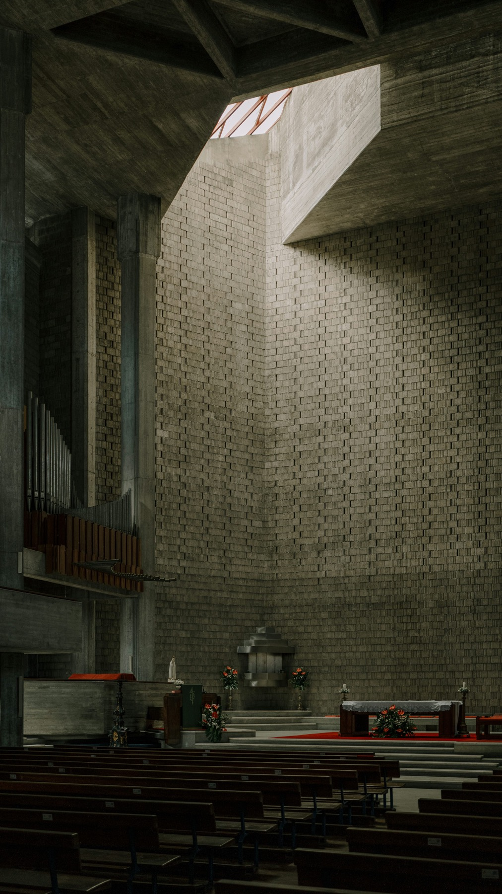

주일예배
AM 09:00 · 11:00
예시 시간 · 실제 예배시간으로 변경 가능
말씀 안에서 자라고,
사랑으로 이웃을 섬기는 공동체.
처음 오신 당신을 따뜻하게 환영합니다.
ABOUT OUR CHURCH
하나님을 예배하는 기쁨, 서로의 일상을 돌보는 따뜻함.
모든 세대가 함께 자라가는 교회를 꿈꿉니다.
처음 오신 분도,
오랜 시간 함께한 분도.
이곳에 당신의 자리가 있습니다.교회 소개 예시 · 관리자에서 자유롭게 수정하세요.
WORSHIP
AM 09:00 · 11:00
예시 시간 · 실제 예배시간으로 변경 가능WED PM 07:30
예시 시간 · 실제 예배시간으로 변경 가능SUN AM 11:00
예시 시간 · 실제 예배시간으로 변경 가능온라인 헌금은 교회가 지정한 외부 결제 페이지에서 진행합니다.
SERMON
LATEST MESSAGE
설교 영상의 제목과 날짜, 말씀 요약을
관리자에서 직접 등록할 수 있습니다.
COMMUNITY · OUR STORIES
사진과 글로 기록하는 교회 소식, 그리고 우리의 일상.
미리보기 게시판입니다. 작성한 글과 사진은 이 브라우저에만 저장되며 다른 방문자에게 공개되지 않습니다.
WEEKLY BULLETIN
주보 PDF는 실제 파일을 등록한 후 열 수 있습니다.
CONTACT
주소교회 주소 등록 예정
전화교회 연락처 등록 예정
이메일교회 이메일 등록 예정
방문 전 예배 시간과 교회 위치를 확인해 주세요.
안녕하세요. 무엇을 도와드릴까요?
미리보기용 안내 메뉴입니다. 실제 챗봇 상담은 추후 연결할 수 있어요.